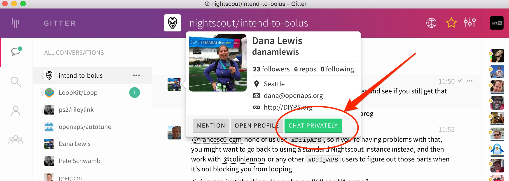
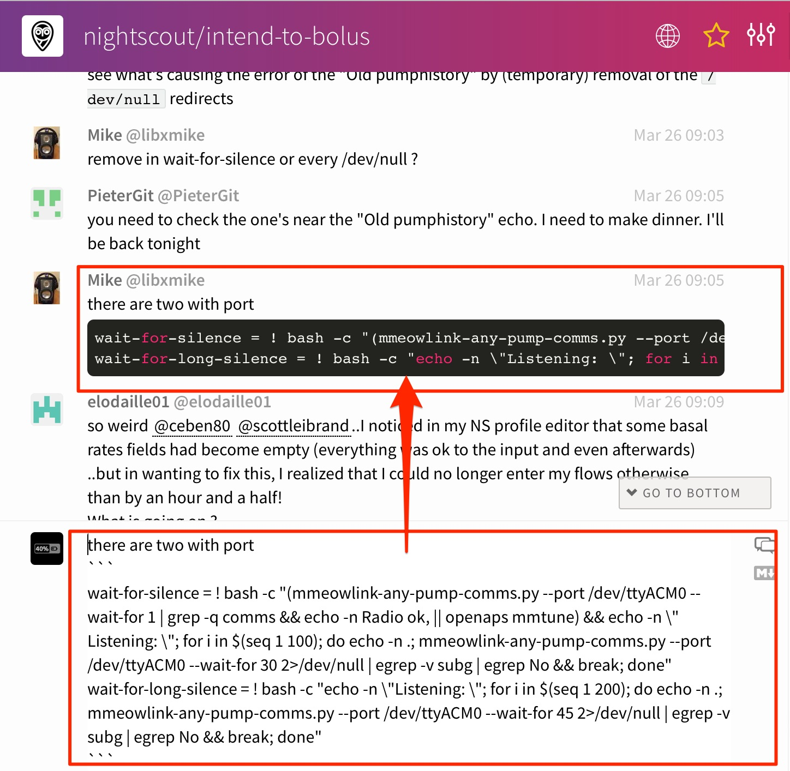
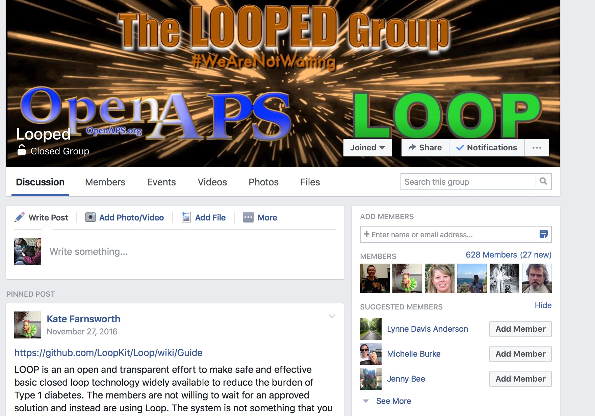

Get Connected
You aren't expected to build or operate your new loop system all alone. There are several areas you can find almost immediate support for troublehsooting or questions about your OpenAPS system. However, there are also ways that you can maximize your chances of getting quality help...providing good information for others to review is a big part of that. Please check out this blog post for some tips on how to get the best help when you need it online.
Gitter
Gitter is an online chat service. It is public (so don't say anything you wouldn't want in google), non-threaded, and organized into groups called channels. Here are the links to some of the groups most active in the DIY looping community currently.
Unfortunately, Gitter doesn't have the best search function to find old information, and since it isn't threaded converations, you may need to spend some time looking for the information. So, if you find a particularly useful bit of information that you couldn't find in the docs...consider making a PR to the docs so that the information is permanently stored for others to find.
You can tag particular people if you have a question by using the @ symbol and then typing their username. This will help notify the person that you are "speaking to them". You can also private message people by hovering over their profile picture and choosing the "chat privately" button.

Gitter has a mobile app which works great for posting text, but does not allow for posting images directly. Using the destop application will allow you to search, edit posts, and add photos. If you want to post a screenshot or image, you can simply drag and drop the file into the Gitter desktop application's active window. The file will upload and then display in the chat thread.
Posting copy-paste code from your rig is also another valuable activity for troubleshooing. To pose a single line of information, you can use the single-backtick-quote that is found on the key to the right of the number 1 key on the keyboard. (hint: it is under the ~ on the same key) If you start and stop a portion of your text with those single quotes, it will look like this. You can also extended-hold the single quote key on your iPhone keypad to bring up the single-backtick-quote that will work in Gitter.
Posting multiple lines of copy-paste from your rig will also sometimes be needed. You can do that by starting the large section of lines with a single line of 3 single quotes (the same one we used in the example above), press control-enter to get a new line started, paste the lines of code that you want to post, press control-enter again to get another new line, enter 3 single quotes to end the section. The copy-pasted lines should have 3 single quotes on the line above and the line below. The example below shows, on the bottom, how the formatted text yielded the black box of text in Gitter. Using this format helps troubleshooters read your information easier than unformatted copy and paste.

There is also a Looped Group in Facebook that is currently a discussion place for users on both Loop and OpenAPS systems. You will need to request membership for the group and respond to a message from the group administrators prior to joining.
The Looped Group has grown considerably in the last 6 months and has many users on both systems. You can search easily for previous posts on topics that may interest you. Note: If you are asking for troubleshooting help, screenshots and additional information about where you are in your problem will help get the best response.

Google Group
A google group focused on OpenAPS development work can be found here. Request access to participate and see some of the archived discussions. If you're new, make sure to introduce yourself!
GitHub issues
For reporting issues on the openaps tools formally, the openaps issues page on GitHub is the proper forum. Feel free to try and get through the issues by working with others on the Gitter channel first if you think it may be something unrelated to the codebase. You can also review the list of issues periodically and learn a lot about how the code has been improved based on user input.
Slack
There is also a Slack channel to discuss communication around other pumps that are being explored for being used for other DIY closed loops.
Many users of the DIY projects post to twitter with their newest developments or projects. Try searching twitter for the hashtags of #wearenotwaiting and #openaps and #loopkit to see what others are posting.